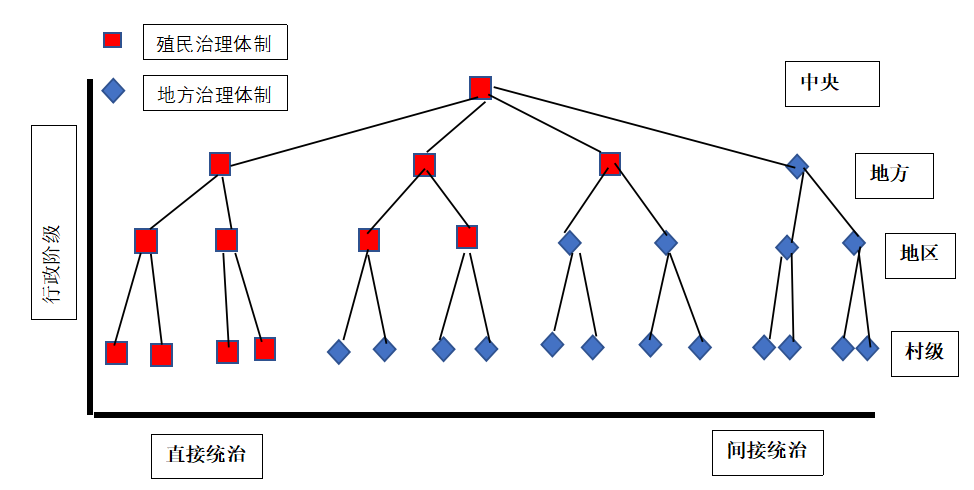
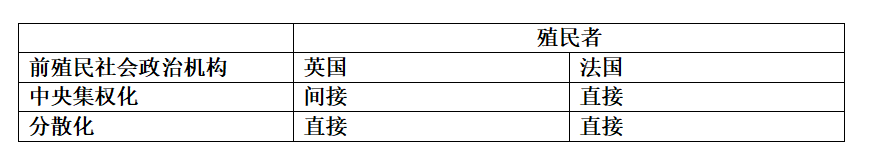
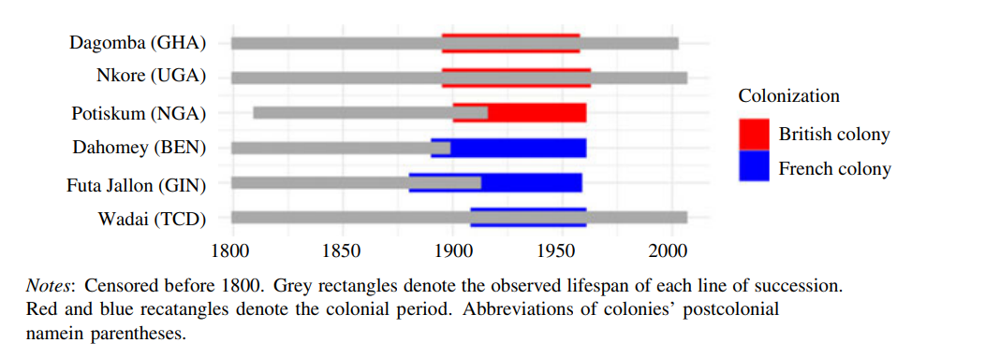
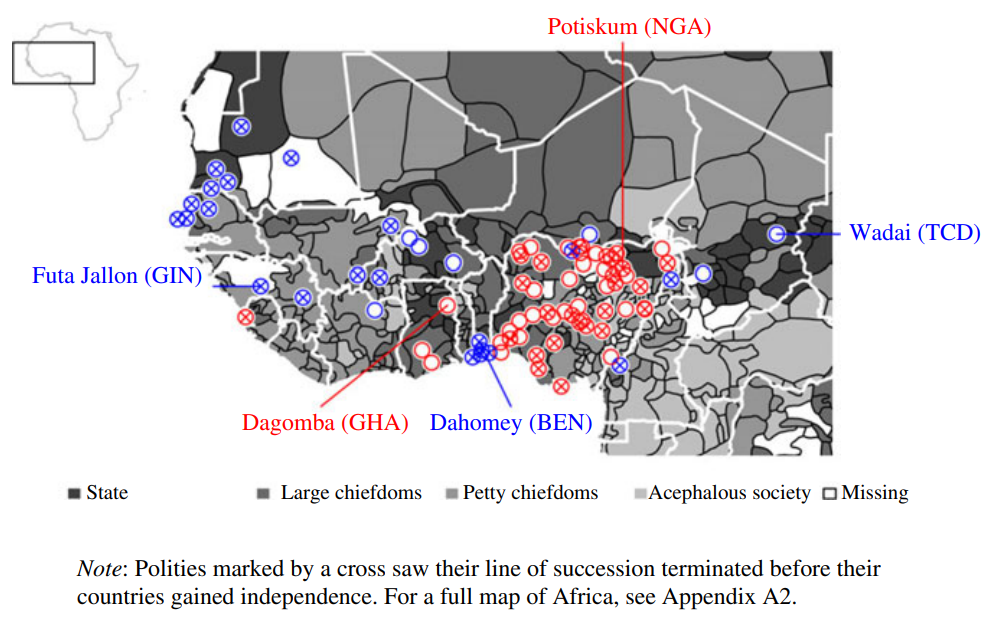
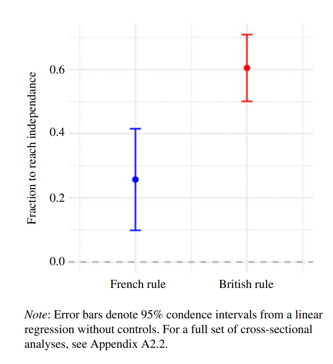
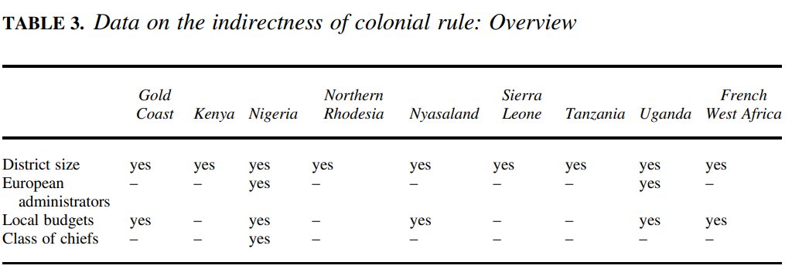
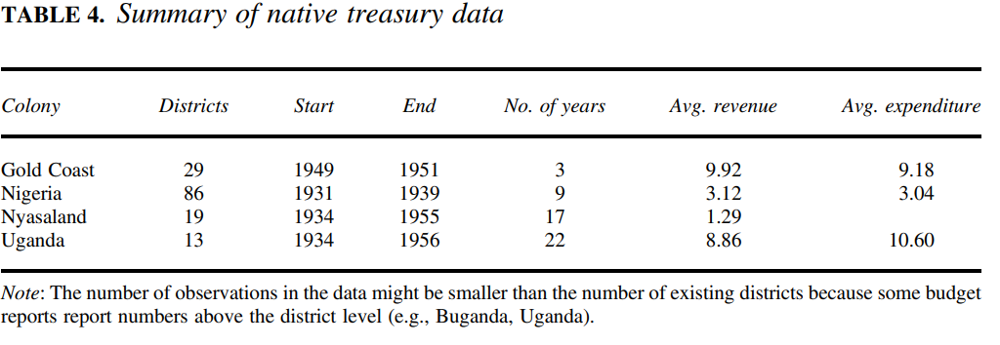

收录于合集

作品简介
【作者】 Dr Carl Müller- Crepon，现任牛津大学政治与国际关系部门讲师，研究方向为国家构建过程对二十世纪非洲当地发展和冲突的影响以及非洲民族选举中的暴力。
【编译】 吴天麟（国政学人编译员，伦敦政治经济学院国际关系专业）
【校对】 任潇依
【审核】 常佳艺
【排版】 陈旻雨
【美编 】马颖
【来源】 Müller-Crepon, Carl. “Continuity or Change? (In)Direct Rule in British and French Colonial Africa.” International Organization 74, no. 4 (2020): 707–741. doi:10.1017/S0020818320000211.
【归档】 《国际关系前沿》2021年第1期，总第28期。
期刊简介
International Organization《国际组织》是国际关系领域的一流学术期刊，也是多学科综合性学术期刊。本刊于1947年由英国剑桥大学出版社创立，内容来源广泛，集中探讨外交政策、国际关系研究、安全政策、国际政治经济以及欧共体趋势等热点议题。2020年期刊影响因子为5.31，在91个国际关系类刊物中排名第一。
**延续或改变？在英属和法属非洲殖民地的直接与非直接统治手法
**
Continuity or Change? (In)direct rule in British and French Colonial Africa
Dr Carl Müller-Crepon
内容提要
非洲现今的政治秩序与殖民主义息息相关，特别是间接式殖民统治留下的政治遗产。尽管如此，学界普遍缺少证明间接统治效果的证据。此文认为不同殖民地的统治风格是由帝国层面的政治特征和前殖民时代机构的互动形成的。研究英法两国与非洲殖民地能够映射出如清帝国、沙俄帝国等多民族政体中的权力分配架构。
文章导读
01
学术争论：英法殖民手法？
在外族统治领域中，地方治理架构的核心在于外来殖民帝国下放政权给予其地方傀儡的程度。虽然直接统治所附带的巨大军事和行政压力会为统治者带来更高的统治代价，但统治者可以绕过分享地方财政收入并向中央收取俸禄的中介统治集团而收获更多利益。相反地，间接统治的代价相对较低，但是统治者必须与中介集团分享地方财政收入并提供俸禄。以上的困境正是许多由多民族、多方势力构成的“合成政体”所面对的问题，如奥斯曼帝国等。在1881-1914年间，急速在非洲各处扩张殖民地并建立起缺乏欧洲裔殖民官员管理的庞大帝国的英法两国同样面临此难题。
某种程度上说，所有殖民帝国都依赖地方中介横跨诸多社会结构、语言、地理差距实行管制。虽然美国政治科学家Jefferey Herbst认为所有殖民帝国都依赖各种现存机构减少统治代价，但Achebe 等非洲作家的作品则反映了非洲土著社会政治架构崩溃的景象。因此，此文通过重点分析地方治理体制的性质来解决争论。整体来说，我们能从（图一）了解到不同的治理风格。在完全实行间接统治的情况下，统治者会整合所有中央层面以下的治理体制为己所用。在完全实行直接统治的情况下，殖民政府则会自行产生能够打通到基层的治理体制。所以，统治中心与地方基层之间的所隔层级越多，统治风格就越间接。

图一：间接管治的构思图
有关殖民地方治理的现存研究主要有两大方向。第一个方向是殖民者（英法）身份与英法统治手法的差异。学界通常认为英国殖民管治较为间接和松散，通常与现存地方治理体制合作，法国则对地方治理结构和中介不友好，喜好直接构建统治机构取代地方代理。第二个方向是认定殖民统治是否直接取决于地方传统以及前殖民时代遗留下来的治理体制。殖民者在面对松散、无严密国家治理架构的社会时就会被迫自行建立管治机构，而当（英法）列强在遇到如清帝国等拥有大量复杂地方治理体制的殖民地时便会选择间接统治。但是，目前的研究依然面对着一些难题。第一，学界缺乏足以说明英法殖民风格之间差距的系统性证据。Herbst 提出的地方法院判决案例数目、道路网络、殖民官员人数等指标皆可被认为是经济发展差异的结果。第二，学界缺乏说明前殖民地方治理体制效果的系统性、空间分解化的证据。
02
英法殖民统治风格的差异
英法两国同为殖民帝国，却在统治风格和处理与当地关系方面有巨大的差异。以在非定居殖民地的表现为例，法国在殖民统治初期努力建立了一个相对划一、基于法国政治体制而不是现存地方治理架构的直接统治系统。相反地，英国建立统治系统的思路围绕地方与地区自治展开，不过在面对缺乏中央集权化的土著政体时则会陷入困境。
历史记录：英法两国统治手法差异
法国殖民统治的历史记录显示出其一向选择摧毁前殖民地方精英的势力。自然而言，这使得法殖民政府面临地方政体的顽强抵抗。尽管如此，法国依然依赖地方代理人替其强征民夫、招兵和维持地方基建。法国聘请的地方代理人往往不是因为其前殖民时期的地位，而是因对法国的忠诚而被任命的，他们被统治者剥去传统权威并在法国殖民官或总督的监督下蜕变成殖民代理人。这些殖民代理人被四处轮调并被要求与法国统治官员用法文沟通，因此法国官员往往对其统治的社会和语言文化缺乏了解，也同时导致了地方治理体制的没落和殖民治理的系统化。
表一：预期的殖民治理风格

相反地，英国殖民统治的思路企图利用本地现有的地方治理体制以及土著领袖的威信巩固英殖民统治制度。因此，英国人在与地方治理体制的互动过程中允许它们保留以往的行政、立法和司法功能并把原有制度融入英殖民体系中。所以英国派往当地的殖民官员通常只会扮演咨询和技术支援的角色，更鼓励当地代理人自治。
不过，不是所有前殖民政体都适合间接统治模式。英国殖民政府能否融入地方治理体制取决于殖民地以往政体的中央化和阶级化程度。当土著们拥有集权化的政治体系时，英国人可以投机取巧利用当地代理人。如现今处于乌干达境内的布干达王国、处于尼日利亚北部的富拉尼酋长国、现位于黄金海岸的阿散蒂联盟都是复杂的、中央集权化的地方政体。英殖民政府充分利用此特点，向土著统治者提出“要么跟我合作并保留以往权贵地位，要么你死定”的提议并与不少地方精英达成协议。这所产生的间接殖民统治有两个特色。第一，英国只需投入少量行政资源检查代理并“收租”。第二，地方精英可保留大部分以往的权力，更成为了管治前殖民时代政体机构、阶级、土地的“土皇帝”。
当英国殖民者遇上极为松散、碎片化的治理体系时，便往往需要重新建立从中央直至村一级的政府。例如，缺乏中央集权化架构的东南尼日利亚以及肯尼亚北部地区则以英国人建立的“村委会”进行管治。无论如何，村级单位是无法有效地与殖民帝国的中央沟通的。所以英国最终也需建立由中央到村的政治架构。因为新建立的殖民政体与原来松散、碎片化的政体毫无政治和文化关系，所以新的代理人的表现与法国殖民官员类似。这所产生的直接殖民统治有两个特色。第一，英国殖民政府需投入大量人力物力维持统治架构的运作。第二，低层代理人所管控的范围较间接统治下的范围更小。
为什么英法两国有不同的殖民统治风格？
既然直接统治的代价如此高昂，那法国为何选择瓦解土著地方势力推土重来呢？又或者，既然英国人明白直接统治能够更好地榨取殖民地资源，那又何必进行间接统治呢？作者认为英法之间有三个关键差别。第一,法国中央政府相对于同期其它欧洲政府更为中央集权化，而英国政府则偏向小政府主义。第二，法国人拥有革命性的共和主义，而英国人则强调利用现有的土著治理体制。第三，法国政府能在殖民管治方面上调动更多的行政资源。
首先，殖民者本身的管治风格影响了其殖民地的管治风格。法国第三共和国中央集权化的政府影响了法国的殖民模式。在攻占殖民地的法军将领的管理下，本来就等级严明的殖民地又受到了殖民官中央集权化趋势的影响。如法国殖民官员或总督企图逆行采取间接统治模式，这不仅会升高统治成本，更可能导致某些殖民地要求自治。相比之下，英国在十九世纪的统治手法层出不穷。有在加拿大和南非等定居性殖民地实施自治的方式，也有如印度模式般的“异构承包”手法。所谓异构承包无非就是依赖各种代理人的间接统治，这手法让英国在统治印度和非洲殖民地时大大降低了统治成本。
其次，如William Ponty总督等法国官员作为坚定的共和党人，非常厌恶地方世袭贵族的存在。Ponty曾称世袭贵族为毫无财政效益，寄生于民众的寄生虫。基于人人平等的共和原则，法国殖民官员尝试以语言、文化和政治教育将其殖民地人口同化成 “一亿个法国人”。英国殖民统治的逻辑更关注保存殖民者与被殖民者之间的文化差异，也对传统贵族阶级更为容忍。因此，英国殖民政府对改造臣民的意愿更弱，并把宗教、文化传播等工作外包给传教士。法国企图传播革命性的思想和文化，所以必须直接统治，而英国人则无需集权管理殖民地。
最后，法国政府能够动用更多的资源推动代价相对高昂的直接统治。法国殖民政府雇佣的欧洲裔殖民官人数是英国殖民官员的九倍。由于处于英国庞大的海外殖民帝国统治下的人口高达四亿人，假设英法双方都能抽调等同数量的训练有素的殖民官员，英国也无法达到法方的官员密度。
03
**
**
前殖民时代政治架构的生存率
为了测试位于法国殖民地区域内的前殖民时代政体是否更容易消亡，作者引用了有关124个本土非洲政体在十九到二十世纪初的数据做分析。作者发现位于法国殖民统治下的本土政体灭亡的机会率每年高于处于英国统治下的本土政体4倍。

图二：1800-2000年间前殖民政体的继承线
备注：红色和蓝色四方形代表殖民时代，
灰色四方形代表生存时间

图三：西非所有被殖民的政体
备注：所有打叉的政体都在独立前消亡

图四：被殖民后的政治继承线到独立后的生存比例
备注：错误栏表示无控制的线性回归下95% 的置信区间
在法属西非区域内只有少数政体能够在独立到来时维持领导层的完整，这对重视家族或族裔继承的不少前殖民非洲政体来说是极具打击性的。能够维持完整的政体大多位于尼日尔（Zinder王朝）和查的(Wadai王朝)偏远地区或像现位于布基纳法索的莫西王国那样难以被驯服占领的政体。在西非黄金海岸地区英国管治下的非洲政体则全部存活下来，不过可能会像曾经强大的阿桑提帝国般变弱或成为象征性的存在。无论如何，在法国殖民下只有26%的本土政体存活下来，而在英国统治下这个百分比升到60%。
04
间接统治与前殖民时代政体
理论上，殖民者所花费的行政精力和本土政体权力能够反映间接统治是否成功。殖民统治越间接，中央政府所花费的精力越少，而所下放的权力则逐步增加。因此，作者以英属尼日利亚为基础提出了几个能够衡量殖民政府行政压力以及地方政体权力的指标。
第一， 地区的数量。每一个地区都需要最低的管理资源以及一个欧洲裔殖民官或总督，所以地区数量与行政资源挂钩。还有，行政区域越小，行政总部与地方民众越接近，管治手法也会变得越直接。
第二， 欧洲裔殖民官的数量。
第三， 地方财政预算。英国殖民政府喜欢借助中央集权化的政治架构替他们收税。因此，更为独立的地方政体应在支出和收入方面均享有更宽松的财政预算。
第四，地方酋长的权力。地方（尼日利亚）酋长权力可以从他们享有的权利和认可衡量，这些都能在他们的官方“等级”（class）中映射出来。“一级”酋长享有最大的权利而“三级“酋长权力非常有限。
表三：间接化殖民统治程度

表四：地方财政数据

05
结论
总而言之，法国采取了直接统治的殖民手法并在过程中重创了当地的前殖民政体。相反，英国利用间接统治的手段，依赖原有政治社会架构，保留了地方酋长、豪强的传统势力。因此，法国殖民统治下的前殖民政体有70%在独立前消亡，而处于英国殖民地区的政体则有30%在独立前消失。同时，在前殖民政体盛行以及英国统治的地区，行政区域面积普遍比政治架构松散的殖民地大35-54%。由于法国殖民政府偏向直接管理，所以即使行政区域处于集权化原有土著政权的范围内，也比英国行政区小35-54%。这显示出间接统治的程度的确取决于当地前殖民政治社会架构的中央化、集权化程度。
以上这些发现对于研究政治等级制度在比较政治和国际关系领域中的建立有着深远影响。由于利用现有政治架构间接统治的手法取决于现有政体的复杂程度，或许美国把全球性“反恐战争”外包给地区性盟友，但又因阿富汗缺乏强而有力的中央政府而深陷泥潭的现象就出自此处。而不同国家在国际舞台上支配下属地区或国家的策略来自于自身内部权力架构、意识形态偏好和施加强制性力量的限制。这也许可以解释苏联为何以更直接的手段管治东部集团，而美国则以更松散的方式调控欧洲盟友的外交。同时，此文颠覆了“非洲永不变”的刻板印象。虽然殖民主义打造了以后的非洲政治秩序，但不同的殖民风格却带来了不同的影响。殖民主义的多变性与本土前殖民政体的互动破解了以往“殖民主义=现在状况”的旧思想。
最后，作者基于殖民风格的多样性提出了一连串新问题：直接与间接统治对于成千上万的当地居民、酋长、欧洲裔殖民官和指派的地方代理有什么影响？殖民管治模式又是如何影响欧洲殖民帝国暴力、破坏以及榨取利益的程度呢？
词汇整理
1. Direct rule : 直接统治
2. Indirect rule : 间接统治
3. Local governance arrangements : 地方治理架构
4. Colonial institutions : 殖民治理体制
5. Precolonial polities : 前殖民政体
6. Centralized institutions : 中央集权化的治理机制
7. Self-Rule/Home Rule : 自治
8. Heterogeneous contracting : 异构承包
9. Republicanism/Republican ideology : 共和主义
文章观点不代表本平台观点，本平台评译分享的文章均出于专业学习之用, 不以任何盈利为目的，内容主要呈现对原文的介绍，原文内容请通过各高校购买的数据库自行下载。

国政学人
支持学术公益与知识传播
微信扫一扫赞赏作者 __赞赏
已喜欢，对作者说句悄悄话
取消 __
发送给作者
发送
最多40字，当前共字
上一页 1/3 下一页
长按二维码向我转账
支持学术公益与知识传播
受苹果公司新规定影响，微信 iOS 版的赞赏功能被关闭，可通过二维码转账支持公众号。